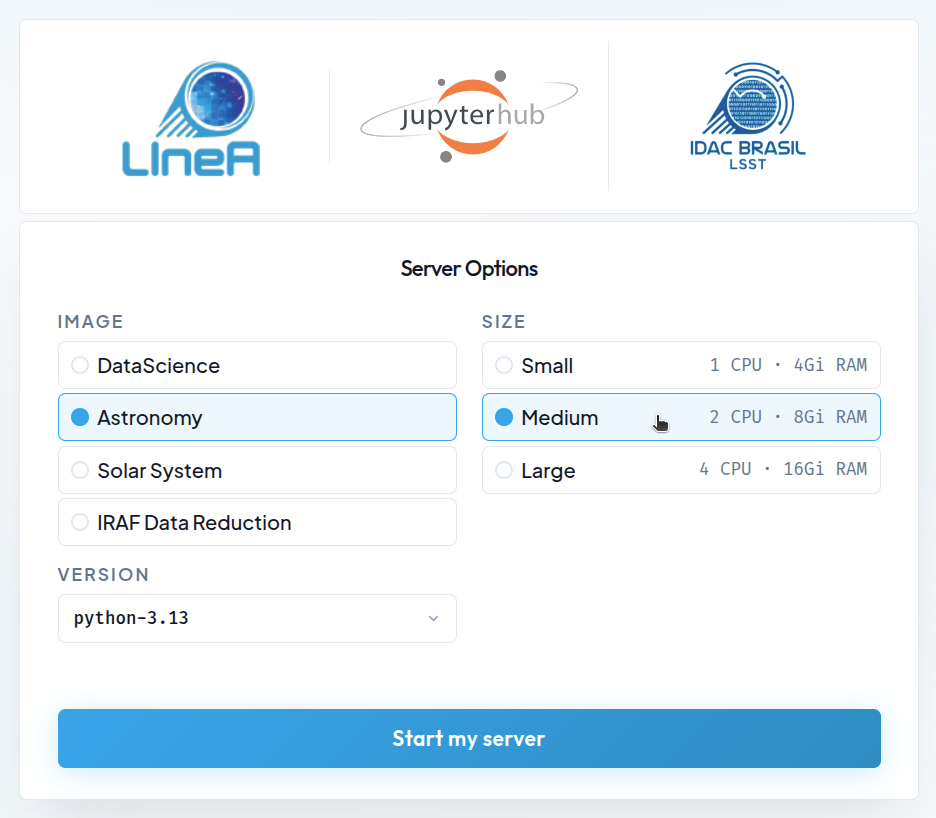
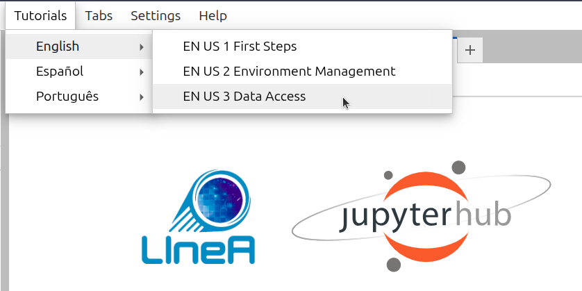

JupyterHub
JupyterHub is a multi-user development environment based on IPython Notebooks that provides access to shared computational resources on a remote server, without requiring installation or maintenance by users. The only prerequisites for accessing JupyterHub are: having a user account at LIneA (see here for instructions on how to create your account) and a web browser with Internet access. The so-called Jupyter Notebooks allow users to combine interactive code, execution results, explanatory text, and multimedia resources within a single document.
As part of the LIneA Science Platform, the LIneA JupyterHub is integrated with other data visualization and access tools. In this way, all data analysis can be performed online within the platform—from data ingestion, visualization, and processing to the analysis of results—without the need to download the data to the user's personal computer.
Home Screen¶
By clicking on the "JupyterHub" card within the LIneA Science Platform (or by accessing it directly at jupyter.linea.org.br), you will be redirected to the login page and then to the home screen, which displays the different configuration options for the Jupyter server.

Available Configurations¶
Pre-configured Docker Images¶
The default installation of LIneA JupyterHub is based on Docker containers with pre-configured environments designed to meet most user needs. Four Docker images are available:
- DataScience – the Jupyter Data Science Notebook stack, including popular data science libraries such as Pandas, NumPy, Matplotlib, SciPy, and Scikit-learn.
- Astronomy – the generic astronomy stack, which includes the main data science libraries as well as widely used domain-specific packages such as Astropy, Astroquery, Healpy, Photutils, PyVO, Dustmaps, LSDB, and AstroML, among others.
- SolarSystem – a stack tailored for Solar System studies, including the main libraries from the DataScience and Astronomy images, as well as specialized packages such as sbpy, spiceypy, rebound, sora-astro, reboundx, among others.
- IRAF Data Reduction – a customized image designed to support tasks that depend on the reduction and manipulation of astronomical images using traditional tools such as IRAF and DS9 (more modern tools such as Astropy CCDProc, Photutils, and Reproject are available in the Astronomy image).
Check here the list of the main libraries included in the environments and links to their respective documentation.
| Category | Library | Purpose | Doc |
|---|---|---|---|
| Data Science and ML |
corner | Visualization of posterior distributions. | doc |
| dynesty | Bayesian nested sampling. | doc | |
| emcee | MCMC sampling. | doc | |
| lmfit | Nonlinear model fitting. | doc | |
| NumPy | Numerical operations and multidimensional arrays. | doc | |
| Pandas | Table analysis and data manipulation. | doc | |
| scikit-image | Image processing. | doc | |
| scikit-learn | Machine learning and predictive models. | doc | |
| SciPy | Advanced scientific functions and numerical methods. | doc | |
| Visualization | Bokeh | Interactive visualizations for the web. | doc |
| Datashader | Rendering of large-scale datasets. | doc | |
| HoloViews | Declarative data visualization. | doc | |
| hvPlot | High-level visualization API. | doc | |
| Matplotlib | 2D/3D scientific visualization. | doc | |
| Plotly | Interactive plots and dashboards. | doc | |
| Seaborn | High-level statistical visualizations. | doc | |
| Databases, Jupyter and Utilities |
psycopg2 | PostgreSQL connector for Python. | doc |
| SQLAlchemy | ORM and SQL toolkit for database manipulation. | doc | |
| pooch | Dataset download management. | doc | |
| Dask | Parallel and distributed computing. | doc | |
| IPykernel | Python kernel for notebooks. | doc | |
| Astronomy | astrocut | Astronomical image cutouts. | doc |
| astroML | Machine learning applied to astronomy. | doc | |
| Astropy | Core astronomy tools. | doc | |
| Astroquery | Queries to online astronomical archives and catalogs. | doc | |
| Cartopy | Geospatial maps and projections. | doc | |
| Dustmaps | Milky Way extinction maps. | doc | |
| HATS Import | Catalog conversion to HATS format. | doc | |
| Healpy | HEALPix map manipulation. | doc | |
| ipyaladin | Interactive sky visualization (Aladin Lite in Jupyter). | doc | |
| lineassp | LIneA Solar System Portal API. | doc | |
| lightkurve | Light curve analysis (Kepler/TESS). | doc | |
| LSDB | Scalable catalog analysis. | doc | |
| Photutils | Photometry and source detection. | doc | |
| pyspeckit | Spectral fitting and analysis. | doc | |
| pyspac | Solar phase curve analysis and characterization. | doc | |
| PyVO | Access to Virtual Observatory services. | doc | |
| pzserver | Remote access to data and execution of PZ Server pipelines. | doc | |
| rail | Photometric redshift pipeline. | doc | |
| Regions | Sky region manipulation. | doc | |
| Reproject | Reprojection of astronomical images. | doc | |
| specutils | Astronomical spectral analysis. | doc | |
| Solar System |
rebound | N-body simulations. | doc |
| reboundx | Extensions for REBOUND. | doc | |
| sbpy | Tools for small-body science. | doc | |
| spiceypy | Python interface for SPICE (NASA). | doc | |
| sora-astro | Stellar occultation analysis. | doc |
Computational Resources¶
Server Configuration of the K8S Environment
The JupyterHub platform runs on a Kubernetes (K8S) cluster and includes 12 dedicated physical servers. Each machine is equipped with the following computational resources:
| Kubernetes Node Configuration | |
|---|---|
| RAM | 64 GB |
| Threads per core | 2 |
| Cores per socket | 6 |
| Sockets | 2 |
Available Configurations for Users
On the home page, a menu on the right displays up to three computational resource options that will be reserved simultaneously for each user's Jupyter server. The available options are:
| Size | CPUs | RAM |
|---|---|---|
| Small | 1.0 | 4 GiB |
| Medium | 2.0 | 8 GiB |
| Large | 4.0 | 16 GiB |
Options offering more than one CPU allow parallel code execution, which is useful for tasks that benefit from multiple cores, such as numerical simulations or machine learning model training. However, the K8S-based JupyterHub is designed as a lightweight and interactive development environment and is not optimized for CPU- or memory-intensive workloads. For more demanding tasks—such as large-scale data processing or complex model training—it is recommended to use the alternative Jupyter service available on the Ondemand platform, which provides direct access to LIneA's HPC infrastructure.
Jupyter over K8S vs Jupyter over HPC
LIneA provides two separate Jupyter Notebook environments. The first runs in containers on the Kubernetes (K8S) platform and is integrated with the PostgreSQL database and file system. The second is available on the Ondemand platform and provides direct access to the HPC infrastructure.
Environment Management¶
If your work requires additional libraries or specific version pinning, we recommend using the Conda package manager. To learn more, visit the official Conda tutorial and the project's Cheat Sheet, which provides a list of the most useful commands.
How to Create a Custom Environment¶
For example, let us create an environment with Python 3.12 named myenv. To open a Terminal, click on the JupyterLab top menu:
File > New > Terminal
Let us begin by checking the available environments.
conda env list
If this is your first time accessing the platform, you should see only the base environment available.
Creating the new environment:
conda create -n myenv python=3.12
Activate the Environment¶
To activate the environment:
conda activate myenv
After that, you can install packages normally using Conda or Pip. For example:
conda install numpy=1.26
pip install astropy=7.1
To make the new environment available for use in a notebook, it must be registered as a kernel.
How to Register the Environment as a Jupyter Kernel¶
Create a New Kernel¶
Creating a new kernel from a Conda environment is done using the ipykernel library. It is already available in the base environment.
python -m ipykernel install --user --name myenv --display-name "MyEnv"
Once created, kernels are available for launching new notebooks in the "Launcher" tab or can be selected from the menu in the upper-right corner of a notebook. To list existing kernels:
jupyter kernelspec list
Remove the Kernel¶
To remove a kernel:
jupyter kernelspec remove myenv
Remove the Environment¶
If you wish to remove the environment:
conda env remove --name myenv
Data Access¶
Database¶
LIneA provides a database dedicated to the storage of tabular astronomical data, managed by the Postgres system. This database stores catalogs, maps, and auxiliary tables released by astronomical surveys, as well as tables created by users as results of queries or uploads. Access to data hosted in the database from a notebook in JupyterHub is performed using the pyvo library through the TAP service, with programmatic queries written in SQL or ADQL.
Setup
To connect to the LIneA TAP service API, we will use the requests and PyVO libraries. PyVO is an Astropy-affiliated package that enables remote queries of astronomical data from repositories compliant with IVOA service protocol standards.
import pyvo
import requests
The first step is to establish a connection with the LIneA TAP service:
tap_session = requests.Session()
tap_url = "https://userquery.linea.org.br/tap"
tap_service = pyvo.dal.TAPService(tap_url, session=tap_session)
gaia_dr3.gaia_source table and retrieve the first 10 rows:
query = "SELECT TOP 10 * FROM gaia_dr3.gaia_source"
result = tap_service.search(query)
The result of the query is returned as an object of type pyvo.dal.TAPResults, which can be converted into an astropy.table.Table. This, in turn, can be optionally converted into a Pandas DataFrame to facilitate data manipulation and analysis:
from astropy.table import Table
import pandas as pd
table = Table(result.to_table())
df = table.to_pandas()
Access the complete documentation on how to query the LIneA Postgres database using the pyvo library here: TAP Service
LSDB¶
The Large Scale Database (LSDB) is a Python library developed by the LSST Interdisciplinary Network for Collaboration and Computing (LINCC) as part of the Legacy Survey of Space and Time (LSST). It is designed to facilitate access to and analysis of large astronomical datasets. A vast collection of public data is made available by the project on the LSDB.io website.
LIneA hosts a local copy of these datasets, integrating with the international LSDB.io ecosystem. This infrastructure provides greater efficiency in data transfer for users geographically close to Brazil and enables the Brazilian astronomical community to access and analyze these datasets in an optimized manner using high-performance computing (HPC) resources.
Access to LSDB data from JupyterHub is performed using the lsdb library, which provides a Python interface for querying and manipulating data stored in LSDB. Although LSDB is optimized for handling large data volumes, it can also be useful for small queries. Visit the tutorial list on the official LSDB website to learn how to take full advantage of this powerful tool.
To perform a simple query, simply import the library and open a specific catalog. For example, to access the DES DR2 object catalog hosted in LIneA's LSDB:
import lsdb
import pandas as pd
The command below does not yet load the data into local memory; it only plans to retrieve these columns from the catalog located at the specified URL.
cat = lsdb.open_catalog("https://linea.data.lsdb.io/hats/des/des_dr2",
columns=["COADD_OBJECT_ID", "RA", "DEC", "MAG_AUTO_G_DERED", "MAG_AUTO_R_DERED",
"EXTENDED_CLASS_COADD", "FLAGS_G", "FLAGS_R"])
The variable cat stores an object of type Catalog, which contains methods and attributes to be used—also lazily—without performing computations. For example, let us perform a spatial query in the region of the Sculptor star cluster with a radius of 0.5 degrees:
sculptor_stars = cat.cone_search(ra=15.03875, dec=-33.70916667, radius_arcsec=0.5 * 3600)
After defining the columns and the region of interest, we can execute the query using the compute() method and finally load the data into a Pandas DataFrame:
df = sculptor_stars.compute()
Tutorials in Jupyter Notebooks¶
In the Tutorials menu on the top bar of JupyterLab, you will find notebook templates containing usage examples to learn how to:
- Use a Jupyter Notebook (if you are a beginner)
- Customize your environment with specific libraries and versions
- Access data hosted at LIneA directly from a notebook

The tutorials are available in LIneA’s public GitHub repository, jupyterhub-tutorial, and are regularly updated to include new use cases and address the most frequently asked questions from users. When clicking on a specific tutorial, the system creates a copy of the notebook in the current directory within the user's workspace, ensuring that each user can run and modify their own copy.
Upon logging into JupyterHub, the system creates a copy of all tutorial notebooks in the $HOME/notebooks/tutorials/ directory in the user's workspace. Modifying the original files is not recommended, as future updates may be lost. If you wish to maintain a customized version, we recommend always using the Tutorials menu to create a new, updated copy in the current working directory.
AI Assistant (Experimental)¶
The AI assistant in JupyterLab is provided by the Jupyter AI (v2) extension and supports the %ai and %%ai magic commands.
Quick start (minimal flow)¶
%load_ext jupyter_ai_magics
%ai list
%%ai coder1b
Describe the Pythagorean theorem
Optional (for larger context, in chat):
/learn *.ipynb
/ask Summarize this notebook.
1) Jupyternaut chat¶
In JupyterLab, open the Jupyternaut side panel (chat icon). After configuring the model/keys, you can use slash (/) commands directly in the chat:
/learn <path|pattern>: indexes local files for use as context./ask <question>: asks specifically about the content learned with/learn./learn -d: clears the local knowledge base created by/learn./fix: helps fix a cell with an error (the chat asks you to select the faulty cell)./export [file.md]: exports the conversation history to Markdown./clear: starts a new conversation and clears the current chat context.
Practical use of /learn (key differentiator)¶
At LIneA, /learn uses local embeddings (default model: nomic-embed-text).
The content is processed in chunks and converted into local embeddings.
These data are used for context retrieval (RAG) during chat.
Characteristics:
- it does not change the model;
- it is not permanent memory (it can be cleared with
/learn -d); - it is ideal for documentation, notebooks, and code;
- where it is stored: Jupyter AI local vector database at
~/.local/share/jupyter/jupyter_ai; - chunking at LIneA is controlled by
LINEA_CHUNK_SIZE(default 1200) andLINEA_CHUNK_OVERLAP(default 240). Therefore, the-c/-oparameters may be overridden by the environment/policy; - by default it ignores
node_modules,lib,build, and hidden files (use-ato include everything).
When to use each command:
/ask: when the question depends on files indexed by/learn(contextual questions about local documentation/code).- Regular chat: when the question is general and does not depend on indexed local content.
Real example:
/learn docs/
/ask What are the API endpoints?
Chat vs Magic Commands: when to use each one¶
| Tool | Recommended usage |
|---|---|
| Chat (Jupyternaut) | exploration, general questions, use with /learn |
%%ai |
structured execution inside the notebook |
%ai |
helper commands (list models, reset, aliases, etc.) |
2) Magic commands¶
Before using the commands:
%load_ext jupyter_ai_magics
Main commands:
%%ai <provider:model>(or alias): sends a cell prompt to a model.
Example:%%ai coder1b Summarize the main points of this analysis.%ai helpand%%ai help: syntax and options help.%ai list [provider]: lists available models (all providers or a specific one).%ai reset: clears the history used as context in upcoming calls.%ai error <provider:model>: explains the most recent notebook error.%ai register <alias> <provider:model>: creates a model alias.%ai update <alias> <new-provider:model>: updates an alias.%ai delete <alias>: removes an alias.
Useful %%ai features:
- output format with
-f/--format(code,markdown,math,html,json,text,image); - variable interpolation with
{variable}in the prompt; - default model configuration:
%config AiMagics.default_language_model = "linea:qwen2.5-coder:1.5b"
Scope of %%ai:
%%ai commands do not automatically have access to the content of other notebook cells.
By default, the model receives only:
- the text in the current cell;
- variables explicitly interpolated in the prompt (for example,
{variable}).
Example that does not work as expected:
%%ai coder1b
Explain how this notebook is organized.
In this case, the model does not receive the rest of the notebook, so the answer tends to be generic.
How to provide context correctly¶
- Interpolate Python variables:
content = "text from another cell or analysis"
%%ai coder1b
Explain:
{content}
- Use
/learnfor multiple files or notebooks (in chat):
/learn *.ipynb
/ask How is this notebook organized?
In this mode, the assistant uses embeddings to automatically retrieve relevant snippets.
3) External models (configuration)¶
There are two usage scenarios:
- Local (LIneA): works out of the box, with no API key. However, the models are smaller and more prone to hallucinations.
- External (third-party providers): requires credential setup and, in some cases, additional dependencies.
Flow for an external provider:
- configure credentials (environment variables or the chat settings panel);
- confirm with
%ai listthat the model is available.
Persistent keys (~/.linea/apikeys.env)¶
The LIneA environment can keep your credentials in a file under your HOME:
~/.linea/apikeys.env
This file contains variables such as OPENAI_API_KEY, GROQ_API_KEY, NVIDIA_API_KEY, ANTHROPIC_API_KEY, and GOOGLE_API_KEY.
For changes to take effect, restart the kernel/session (or restart JupyterLab) after editing this file.
Local LIneA provider¶
In addition to external providers, the environment also exposes:
lineaprovider (local chat via Ollama, no API key required);lineaprovider for embeddings (shown in the selector as LIneA (embeddings)).
Local chat models available in the linea provider:
qwen2.5-coder:0.5bqwen2.5-coder:1.5bqwen2.5-coder:3bqwen2.5-coder:7b
Attention
Qwen2.5-Coder models are optimized for programming tasks, with sizes ranging from 0.5B to 7B parameters for different speed/quality trade-offs. Use the smaller models (0.5B-1.5B) for simple tasks and fast responses in resource-constrained environments, and the larger ones (3B-7B) for more complex problems. Be careful when using small models for intricate logic or critical security requirements, as they tend to hallucinate and make mistakes. Also remember that they do not automatically have access to the full notebook context, so interpolate variables or explicitly include relevant content in the prompt for better results.
Examples:
%load_ext jupyter_ai_magics
%ai list linea
%%ai coder1b
Write a Python function to read a CSV using numpy.
By default, the environment already includes aliases for the linea provider.
To use only the 1.5b model, use coder1b (equivalent to linea:qwen2.5-coder:1.5b):
%%ai linea:qwen2.5-coder:1.5b
Write a Python function to read a CSV using numpy.
For more capable models and free access, look for providers that offer some level of free-tier access. Providers such as the startup groq (https://console.groq.com/home) or nvidia (https://build.nvidia.com/) offer free access tiers via API keys.
groq provider:
- authentication: enter the key in the
GROQ_API_KEYfield in the Jupyter AI settings.
Example using an external provider (Groq):
%env GROQ_API_KEY=YOUR_GROQ_KEY
%ai list groq
%%ai groq:<YOUR_MODEL_ID>
Summarize the main points of this notebook.
nvidia provider:
- authentication: enter the key in the
NVIDIA_API_KEYfield in the Jupyter AI settings.
Example using an external provider (NVIDIA):
%env NVIDIA_API_KEY=YOUR_NVIDIA_KEY
%ai list nvidia
%%ai nvidia:<YOUR_MODEL_ID>
Summarize the main points of this notebook.
%env vs export (when setting keys)
When a provider requires a key (for example, groq):
%env GROQ_API_KEY=...(orNVIDIA_API_KEY=...): applies to the current kernel (immediate effect for%ai/%%ai);export GROQ_API_KEY=...(orexport NVIDIA_API_KEY=...): applies to the shell but does not necessarily apply to kernels started later. You need to import the environment variable into the code. For persistence, use persistent keys.
Quick example with a local LIneA model (no key required):
%load_ext jupyter_ai_magics
%config AiMagics.default_language_model = "linea:qwen2.5-coder:1.5b"
%%ai
Explain this Python error and propose a fix.
Important: external providers may generate API usage costs. Review pricing and privacy policies before sending sensitive data.
Basic troubleshooting¶
1) Model does not appear in %ai list
- confirm that the provider is correct (for example,
%ai list lineaor%ai list groq); - for an external provider, verify that dependencies and credentials were configured;
- reload the extension in the notebook:
%load_ext jupyter_ai_magics
%ai list
2) Authentication error
- for
groq, confirm thatGROQ_API_KEYwas defined in the current kernel (%env GROQ_API_KEY=...); - if the key was defined with
exportafter opening the notebook, restart the kernel/session; - make sure there are no extra spaces or a truncated value in the key.
3) Kernel does not recognize %ai or %%ai
- load the extension:
%load_ext jupyter_ai_magics; - if the issue persists, restart the kernel and run it again;
- on remote kernels, install the package in the kernel itself with
%pip install jupyter_ai_magics.
Official reference: Jupyter AI v2 Documentation